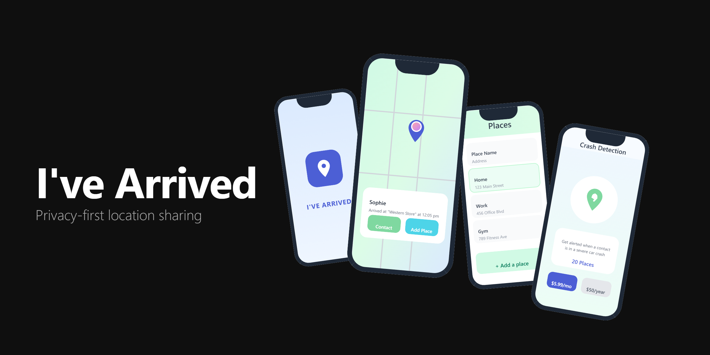
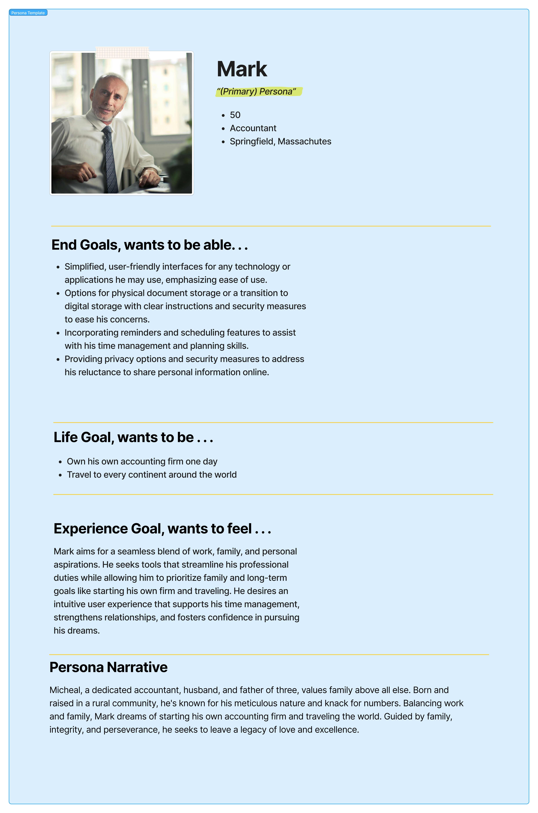
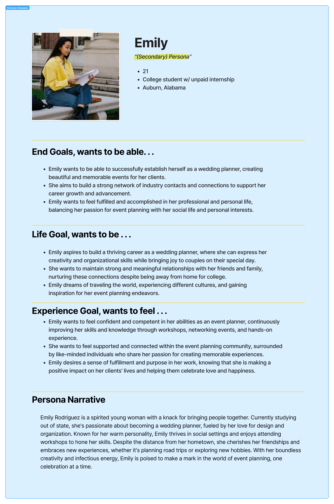
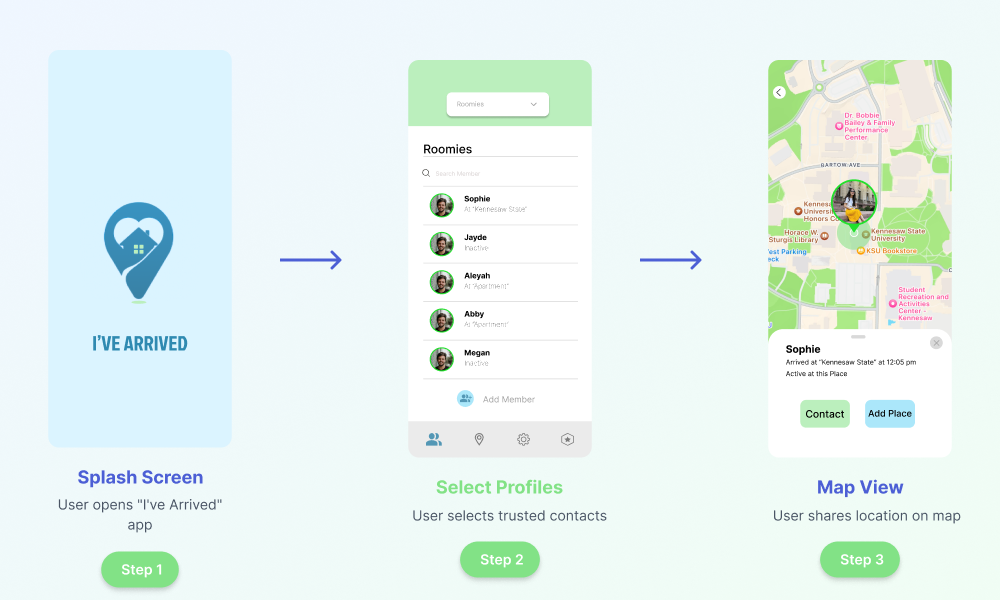
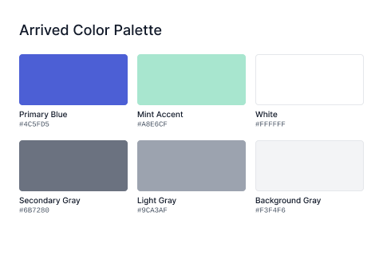
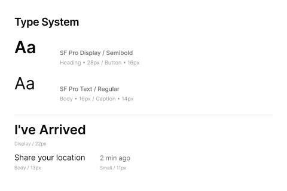
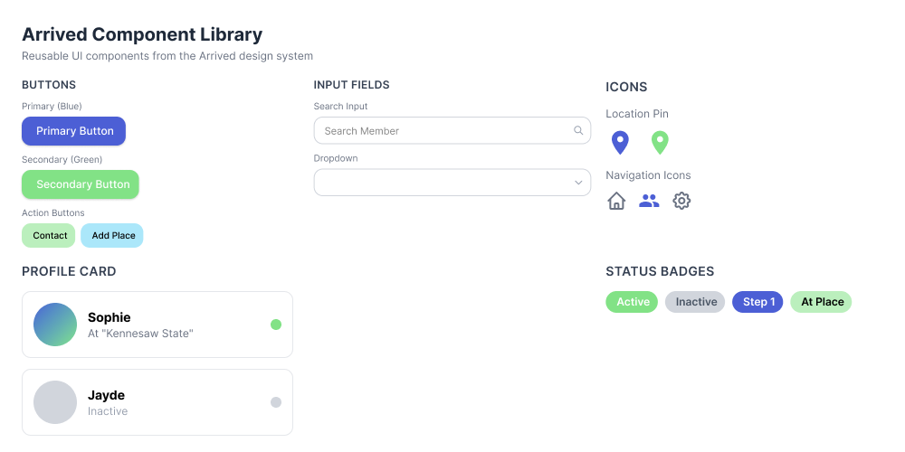

Project Overview
Arrived is a location sharing app built around one simple idea: people should be able to let their family know they got home safe without giving up their privacy. This was a team project, and we used Goal Directed Design to keep us focused on what actually mattered to our users.
Together we dug into user research, built out detailed personas, and designed the core screens. The challenge was finding the right balance between feeling safe and feeling watched.
- Role: UX/UI Designer (Team Project)
- Duration: 12 weeks
- Team: 3 designers
- Tools: Figma, Goal Directed Design
- Deliverables: Personas, wireframes, high-fidelity screens, design system
Project Goals
- Use Goal Directed Design to tackle a real, relatable problem
- Ground every design decision in research-backed personas
- Keep location sharing simple and privacy-respecting by default
- Build a visual identity that feels calm and trustworthy, not alarming
- Test each decision against real persona goals, not gut instinct
Research & Personas
Goal Directed Design puts personas at the center of everything. We built two of them to represent the real tension at the heart of this app: someone who wants peace of mind but worries about privacy, and someone who's totally comfortable staying connected.
Mark - Primary Persona
Mark is a 50-year-old accountant from Springfield, Massachusetts. Family comes first for him, but he's cautious about technology. He doesn't want to feel like he's being tracked, and he'll stop using an app the moment it gets complicated. His goals:
- End Goals: Simplified interfaces, clear privacy controls, reminders and scheduling features
- Life Goals: Own his accounting firm, travel the world
- Experience Goals: Seamless work-life balance, intuitive tools that support time management
Mark's discomfort with technology and his need for privacy shaped almost every decision we made.

Emily - Secondary Persona
Emily is a 21-year-old college student from Auburn, Alabama with her sights set on becoming a wedding planner. She's social, always on the move, and likes apps that keep up with her. Her goals:
- End Goals: Establish herself professionally, build industry connections, feel fulfilled
- Life Goals: Thrive as a wedding planner, maintain relationships, travel for inspiration
- Experience Goals: Feel confident and supported, make a positive impact
Holding both personas in mind kept us honest. Every decision that worked for Mark had to not completely alienate Emily, and vice versa.

Wireframes & Validation
With our personas defined, we started mapping out how each of them would actually move through the app. We focused on three flows:
- Key Path (Pink): Mark's main path through the app, from opening it to sharing his location with as few steps as possible
- Validation Paths (Blue): The moments where users decide who to trust and how much to share, where getting the UX wrong would lose Mark immediately
Laying it all out in one place made it easy to spot where Mark might hit a wall and where Emily would want more.

Design Process
Mark's goals shaped everything. We kept the app to three core screens rather than building out a full feature set:
- Splash Screen - The first thing you see sets the tone. We made sure it felt reassuring rather than technical, with clear messaging and nothing extra.
- Profiles Screen - A simple way to manage who you share with. Mark needed to feel in control here, so we stripped out anything that could feel like too many options.
- Map View - The trickiest screen. We landed on showing approximate location rather than exact coordinates, which gave Emily what she needed while keeping Mark from feeling exposed.
The rule we kept coming back to: share only what's needed, and only when it's needed.

Visual Design & Branding
The visual system had one job: make the app feel safe to use. That meant calm colors, clear type, and nothing that felt alarming or intrusive.
- Color system: Blues and greens that feel calm rather than clinical, giving Mark the reassurance he needs without feeling sterile
- Typography: Clean, readable type that works for Mark at his desk and Emily checking her phone between classes
- Components: Every element built for clarity first, with accessible contrast so nothing important gets missed
- Tone: A design that says "we've got you" without hovering
Color Palette

Typography System

Final Design
Every final decision traces back to something Mark or Emily actually needed:
- Splash Screen - Warm and immediate, giving Mark confidence from the first second
- Profiles Screen - Exactly as simple as it needs to be. Mark wanted to feel in control, not confused.
- Map View - Approximate location, not GPS-precise tracking. This was non-negotiable for Mark.
If a decision couldn't be tied back to one of our personas, it didn't make the cut.
Component System
We built out a component library to keep things consistent across every screen:
- Button styles optimized for touch and clarity
- Input fields with clear validation states
- Status indicators for location sharing and privacy settings
- Contact cards designed for quick recognition
- Privacy controls that feel empowering rather than complicated

Impact & Learnings
Goal Directed Design pushed us to ask "why" before "what." By tying every decision to Mark and Emily's actual goals, we stayed focused and avoided the trap of designing features just because we could.
Key Outcomes
- A focused MVP that does what it needs to and nothing more
- A privacy-first approach that stands out in a market full of always-on tracking apps
- Design decisions backed by persona goals, not guesswork
- A solid design system ready to grow with the product
What I Learned
This project genuinely changed how I approach design. A few things I'll carry forward:
- Follow the personas, not your own preferences
- Hold competing needs in tension rather than defaulting to one
- Always ask: which persona does this serve, and how?
- Sometimes the best feature is the one you leave out
Next Steps
If we kept going, the next priorities would be:
- User testing with real people who match our persona profiles
- Onboarding that earns Mark's trust before asking for any permissions
- A notification system that stays out of the way until it actually matters
- Putting our privacy controls in front of real users to see if they hold up
Key Takeaway: Goal Directed Design creates better products. By really understanding Mark's reluctance to share his location and his need for simple, trustworthy tools, we designed something he would actually use, not just something that looked good.